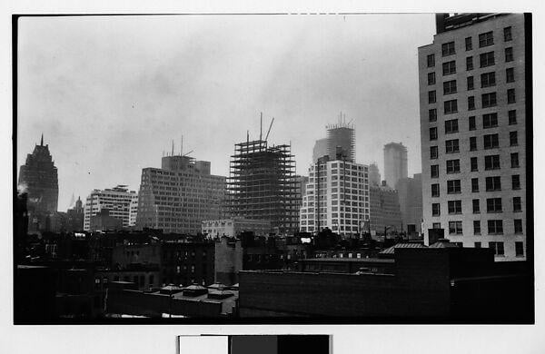
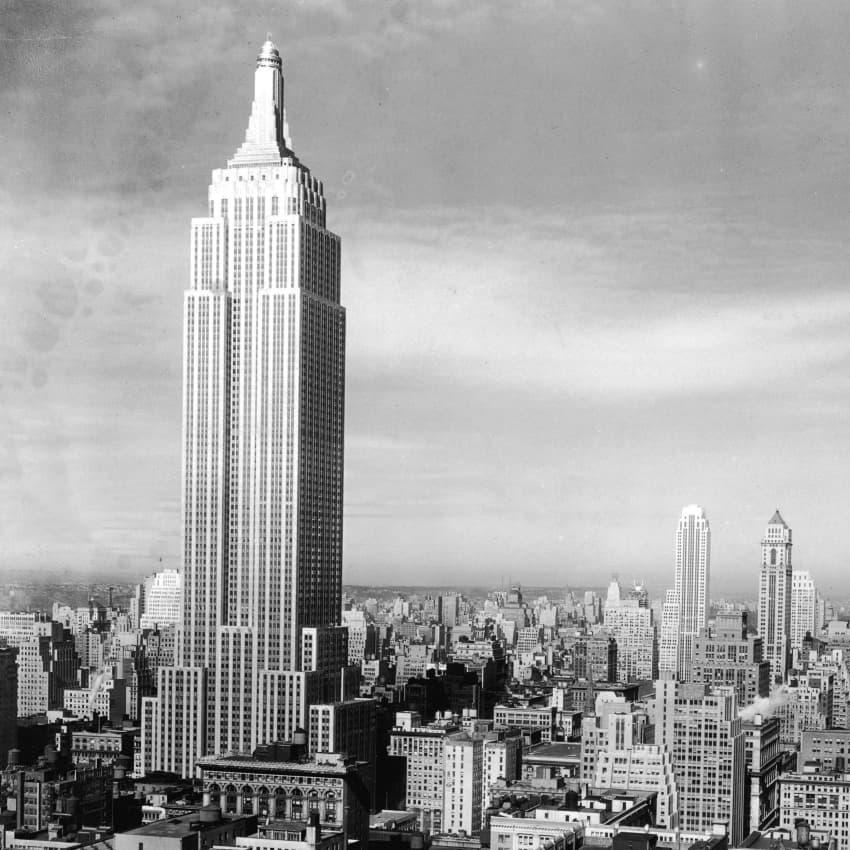
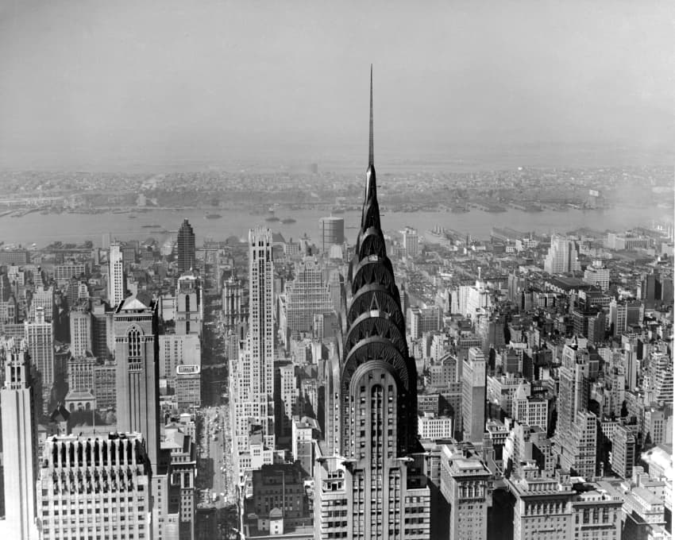
1920년대 역대급 호황을 맞은 미국 경제는 이곳저곳에 마천루를 건설했는데
29년 대공황이 터졌음에도 울며 겨자먹기로 완공을 할 수밖에 없었음
당장 엠파이어 스테이트 빌딩부터가 31년에 지어졌음...
그래서 30년대 이후 거의 20년간 마천루 순위에 변화가 없다가
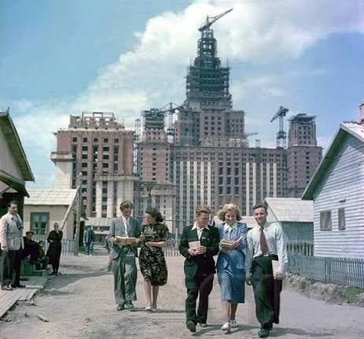
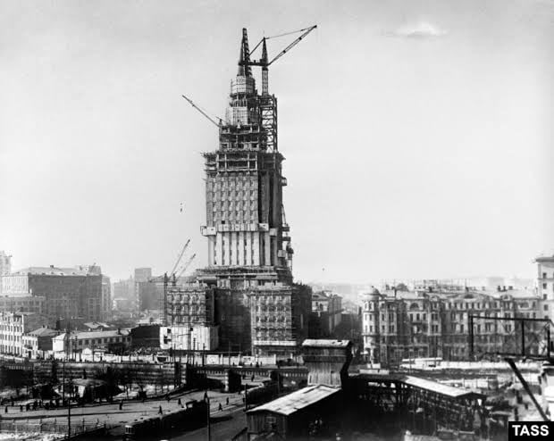
50년대에 소련이랑 동유럽 국가에서 사회주의 체제의 우월성과 국가적 성취를 보여주겠다고 마천루를 지음
그러다 60년대가 되면
이 새끼의 업적 덕분에 초고층건물 짓는게 쉬워져서
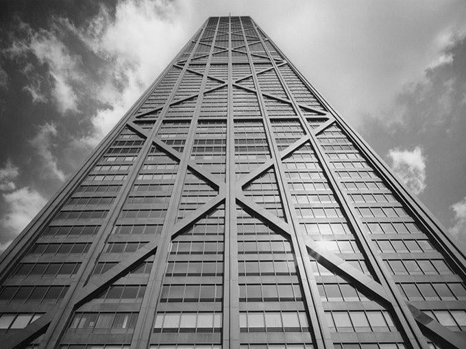
다시 미국이 마천루를 막 지음
이런 기조는 80년 말까지 유지되다가
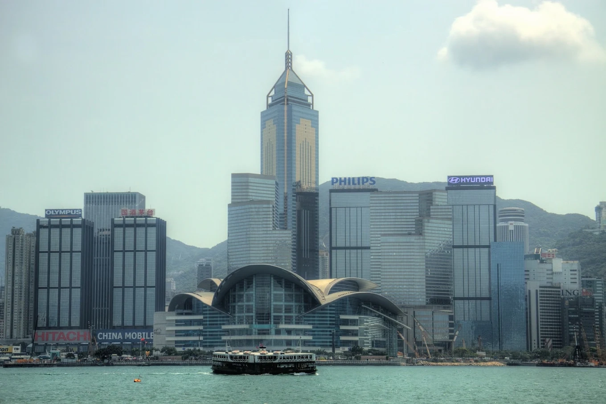
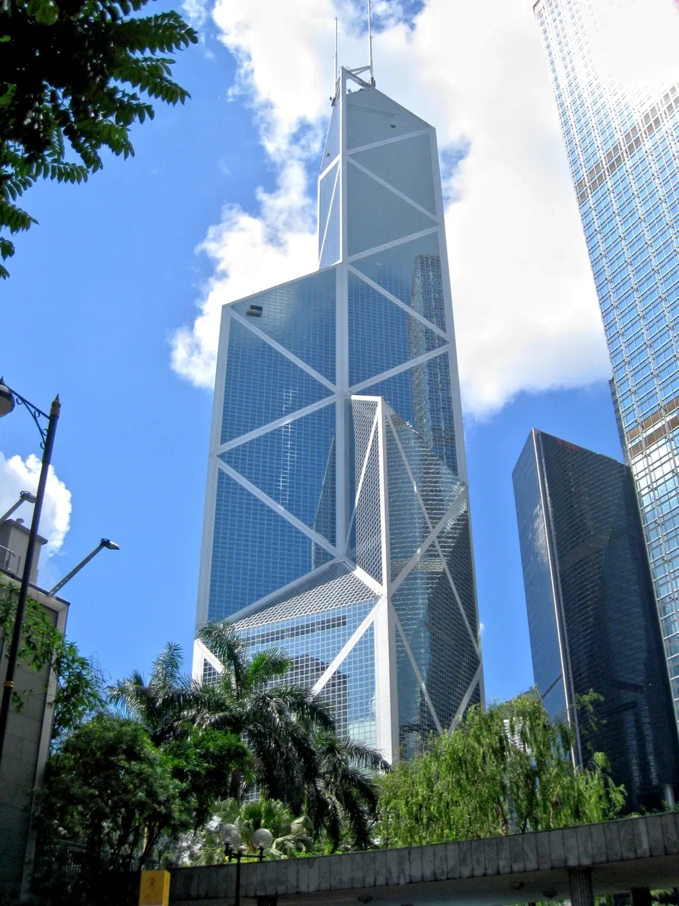
1990년 홍콩에 세계순위급 고층건물들이 하나씩 생기더니
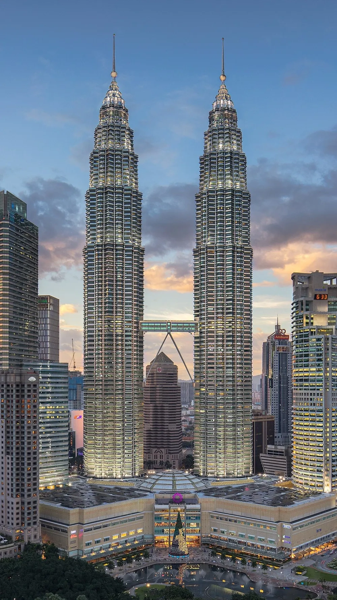
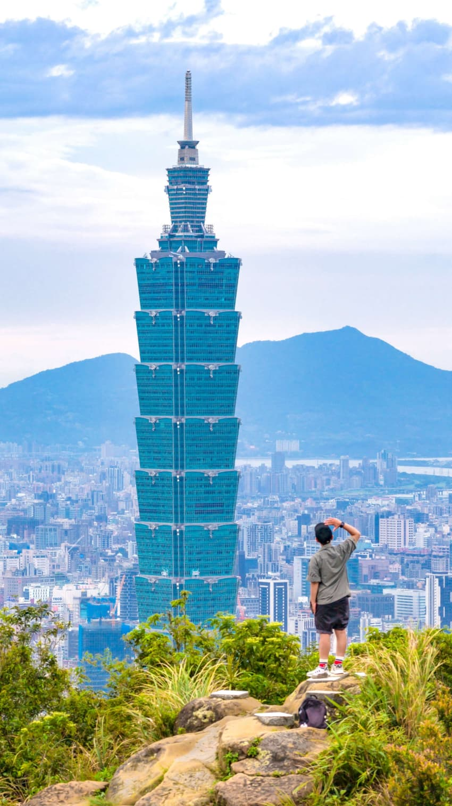
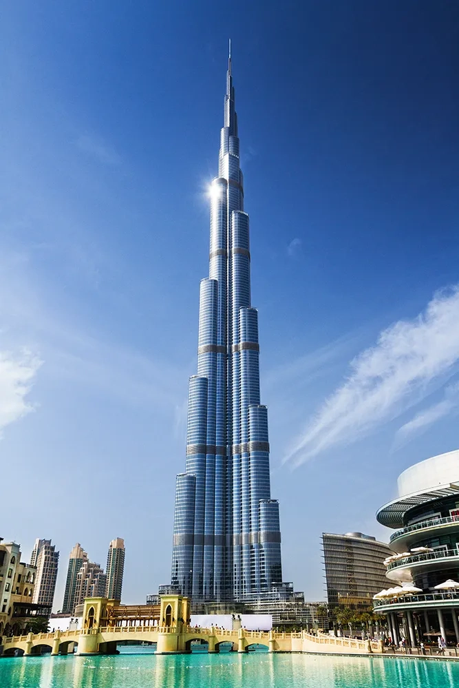
이후엔 아시아 국가들이 다 헤쳐먹고 있음
특히 중국은 시발 경제발전하던 2000~2010년대에 마천루를 3500개나 지어놨음 그래서 어지간한 중국 지방도시가도 고층빌딩으로 뺵뺵함
댓글
수집 당시 댓글 70개
ㅇㅇ · 11.16 15:57:14
ㅇㅇ · 11.16 15:58:27
ㅇㅇ · 11.16 16:02:06
3dd · 11.19 01:56:43
· ㅇㅇ · 11.19 02:09:47
· 노부나가의피망 · 11.19 02:59:38
· ㅇㅇ · 11.19 03:15:20
· ㅇㅇ · 11.19 03:26:58
· ㅇㅇ · 11.19 05:12:39
· ㅇㅇ · 11.19 06:57:27
· ㅅㅂ · 11.19 08:44:05
ㅇㅇ · 11.19 01:57:00
· ㅇㅇ · 11.19 02:39:00
· ㅇㅇ · 11.19 05:59:40
ㅇㅇ · 11.19 01:57:41
· かなたん · 11.19 02:02:33
かなたん · 11.19 02:02:21
· ㅇㅇ · 11.19 02:11:35
MR4오너 · 11.19 02:03:37
ㅇㅇ · 11.19 02:03:53
ㅇㅇ · 11.19 02:04:31
ㅇㅇ · 11.19 02:13:20
ㅇㅇ · 11.19 02:14:52
ㅇㅇ · 11.19 02:21:26
암타엘 · 11.19 02:24:41
ㅇㅇ · 11.19 02:27:56
· ㅇㅇ · 11.19 02:39:48
· ㅇㅇ · 11.19 02:54:50
· ㅇㅇ · 11.19 02:56:14
· ㅇㅇ · 11.19 03:03:19
· ㅇㅇ · 11.19 03:27:32
· ㅇㅇ · 11.19 04:43:30
ㅇㅇ · 11.19 02:54:54
· ㅇㅇ · 11.19 02:56:52
· ㅇㅇ · 11.19 03:00:27
· glow · 11.19 03:11:04
· ㅇㅇ · 11.19 03:42:58
· ㅇㅇ · 11.19 05:03:38
· 공정성장 · 11.19 08:13:08
· ㅇ · 11.19 09:06:36
· ㅇㅇ · 11.19 11:38:18
ㅇㅇ · 11.19 03:42:41
· ㅇㅇ · 11.19 03:43:14
· ㅇㅇ · 11.19 03:44:13
· ㅇㅇ · 11.19 06:49:17
ㅇㅇ · 11.19 05:04:59
관타나모 · 11.19 05:32:56
ㅇㅇ · 11.19 06:27:00
ㅇㅇ · 11.19 06:40:09
ㅇㅇ · 11.19 06:42:52
ㅇㅇ · 11.19 06:48:16
· ㅇㅇ · 11.19 06:48:28
· ㅇㅇ · 11.19 06:55:30
· ㅇㅇ · 11.19 07:01:41
· ㅇㅇ · 11.19 11:31:59
비범한나무늘보 · 11.19 07:06:30
· ㅇㅇ · 11.19 07:46:23
ㅇㅇ · 11.19 07:20:54
ㅇㅇ · 11.19 07:32:53
ㅇㅇ · 11.19 07:44:45
무지개치코리타 · 11.19 07:57:23
ㅇㅇ · 11.19 08:12:22
ㅇㅇ · 11.19 09:15:38
ㅇㅇ · 11.19 09:30:45
ㅇㅇ · 11.19 09:49:16
heyzle · 11.19 09:50:09
ㅇㅇ · 11.19 10:03:51
ㅁㄴㅇㄹ · 11.19 10:07:27
Phaseone · 11.19 10:35:06
히릿 · 11.19 10:53:12